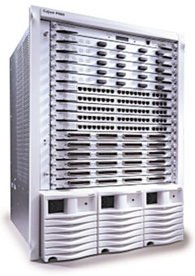
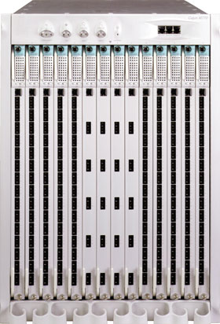
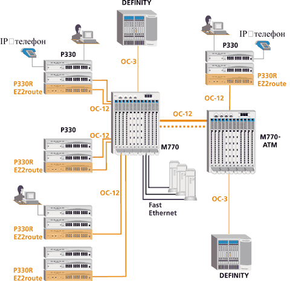
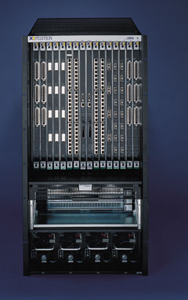

Александр Евангели
Центральные коммутаторы корпоративного уровня определяют коммуникационный скелет всего предприятия. Сетевые платформы, о которых пойдет речь в этой статье, - старшие модели в своих коммутационных семействах.
В оборудовании данного класса сконцентрированы последние достижения технологической мысли и современные идеи в области корпоративного менеджмента. Выпускают такое оборудование немногие - этот рынок требует постоянных и основательных инвестиций в исследования, и потому молодые специализированные компании со своими пусть даже выдающимися продуктами не смогли удержаться на нем и были поглощены "монстрами" рынка.
Старшие модели коммутирующих платформ уровня Enterprise приобретаются на много лет. Бизнес становится глобальным - устройство оснащается WAN-интерфейсами, возрастает угроза безопасности - центральное устройство оснащается платой скоростного экрана и обновленным ПО. Меняются платы, добавляются новые функции и протоколы, предприятие растет - а "черепная коробка" центрального коммутатора остается той же самой.
Производители традиционно обеспечивают совместимость этих устройств с интерфейсными модулями предыдущих поколений. Защита капиталовложений заказчика - важная составляющая маркетинговой стратегии производителей устройств этого класса. Продолжительность жизни изготовителя структурообразующих сетевых устройств влияет на успешность его бизнеса - он обрастает клиентами постепенно.
Все устройства данного класса выполнены в конструктиве шасси, ориентированы на передачу смешанного трафика - голоса, видео и данных, имеют функции для эффективного обслуживания смешанных потоков информации и обладают высокой производительностью. Их все чаще устанавливают в тех точках сети, где раньше применялись маршрутизаторы.
Для них характерно резервирование модулей управления, источников питания и возможность горячей замены любого компонента, а также пассивная внутренняя шина, которая не может сломаться, так как ломаться в ней нечему (у производителей это называется отсутствием возможной точки поломки).
Функциональность таких устройств примерно одинакова у разных производителей и форсирована до предела - поддерживаются многоуровневая коммутация, почти все возможные протоколы, гарантированное качество обслуживания QoS (Quality of Service) для доставки критически важного и чувствительного к задержкам трафика, коммутация третьего уровня и практически все разъемы коммуникационных интерфейсов.
Основные технологии для крупных корпоративных сетей - АТМ, Fast Ethernet и Gigabit Ethernet. Решения на основе АТМ отличаются высокой стабильностью, широким набором сетевых услуг с гарантированным качеством и гибким подходом к интеграции локальных и глобальных сетей. Fast Ethernet и Gigabit Ethernet лучше отвечают требованиям модернизации сети.
Несмотря на то, что в прошлом году доходы на рынке Ethernet-устройств упали, в 2003 г. ожидается их значительный рост. Согласно прогнозу исследовательской компании Dell'Oro Group, объем мирового рынка Ethernet-коммутаторов вырастет от 11,5 млрд долл. в 2001 г. до 18,9 млрд долл. в 2006 г. Всплеск активности, когда предприятия обновляли свое сетевое оборудование, пришелся на 1999 г. (прирост объема продаж составил 2,7 млрд долл.). Поскольку корпоративные сети модернизируют в среднем каждые четыре года, исследователи предрекают основной рост продаж в 2003-2004 гг. Кроме того, рост рынка будет обусловлен появлением новых технологий, таких как 10 Гбит/с Ethernet и Gigabit Ethernet для медных линий, а также снижением цен на коммутаторы 3-го уровня.
Исследовательская фирма IDC поддерживает прогноз Dell'Oro в области снижения цен на Ethernet-оборудование. Так, по прогнозу IDC, к 2006 г. средняя стоимость порта коммутаторов 3-го уровня снизится вдвое, коммутатора Gigabit Ethernet - с 780 до 200 долл. и ниже, а оборудования 10 Гбит/с Ethernet - с 35,3 тыс. до 4,5 тыс. долл.
В этом обзоре рассматриваются продукты пяти компаний - Avaya, Cisco Systems, Enterasys Networks, Optical Access и Nortel Networks.
Многофункциональные коммутаторы Avaya
Avaya P882
Маршрутизирующий коммутатор Avaya P882 (рис. 1) отличается высокой плотностью портов и развитой функциональностью. Он поддерживает передачу голоса, видео и данных и, вероятно, не потребует радикальной модернизации в будущем. Создаваемая на его основе инфраструктура на несколько лет вперед обеспечит возможность внедрения новых сетевых приложений и качество услуг, необходимое для передачи критически важного и чувствительного к задержкам трафика.
|  | Рис. 1. Avaya P882.
|
В Avaya P882 можно устанавливать до 768 портов 10/100 Мбит/с Ethernet, до 128 портов Gigabit Ethernet или до 384 портов Fast Ethernet (100BaseF).
Семейство коммутаторов Avaya оснащено набором аппаратных механизмов QoS для мультисервисных сетей. Коммутаторы P882 с новыми модулями Series 80 способны обслуживать различные типы трафика, в том числе трафик реального времени, с резервированием и распределением полосы пропускания. Все средства QoS полностью соответствуют стандартам.
Основные параметры Avaya P882Предельная производительность устройства - 139 Гбит/с Скорость коммутации- до 106 млн пакетов/с Скорость маршрутизации - до 106 млн пакетов/с До 768 портов 10/100 Мбит/с Ethernet в одном устройстве До 128 портов Gigabit Ethernet в одном устройстве До 384 портов Fast Ethernet 100BaseF в одном устройстве Совместимость с интерфейсными модулями серий 50 и 80 Архитектура Switching Architecture For Extreme Resilency (SAFER) - отсутствие возможной точки отказа |
Архитектура коммутаторов позволяет вводить функции маршрутизации туда, где в них возникает необходимость. Каждый из управляющих модулей 2-го уровня (Supervisor Modules), устанавливаемых в P882, маршрутизирует более 1,5 млн пакетов/с. Модули Series 80 обеспечивают коммутацию 2-го, 3-го и 4-го уровней при работе каждого порта с максимальным быстродействием в линии. Многоуровневая коммутация реализована во всех модулях серии 80; пользователь может активизировать функции 4-го, 3-го или только 2-го уровня, приобретая соответствующий программный ключ.
В коммутаторе P882 использовано то же базовое ПО, что и в младшем устройстве Avaya Cajun P550. Технология OpenTrunk обеспечивает совместимость с продуктами других производителей.
Пакет сетевого администрирования CajunView предоставляет простой графический интерфейс для управления коммутаторами, маршрутизаторами и виртуальными локальными сетями. Технологии SMON компании Avaya обеспечивают многоуровневый мониторинг сети в реальном времени.
Имеется также поддержка новых приложений с групповым трафиком, аппаратное управление трафиком и поддержка протокола IGMP, мощные механизмы для контроля рассылки групповых сообщений. Это обеспечивает эффективное широкомасштабное внедрение таких приложений.
Для полного резервирования коммутатора (в том числе питания и коммутирующей инфраструктуры по схеме N+1) в один из 16 разъемов расширения необходимо установить резервный управляющий модуль. Архитектура SAFER позволяет создавать отказоустойчивые сети с резервированием на всех уровнях. На уровне портов она сочетается с технологией кластеризации физических соединений Link Aggregation Group. Последняя обеспечивает балансировку нагрузки между двумя соединениями, удвоение пропускной способности логического канала при работе обоих соединений и сохранение работоспособности канала при отказе одного из соединений.
Avaya M770
Коммутатор Avaya M770 (рис. 2) - это хороший пример обеспечения надежности и производительности в сетях АТМ и Ethernet. Он выводит традиционную для корпоративного рынка коммуникационную инфраструктуру, основанную на стандартах Ethernet и коммутации пакетов, в область АТМ-технологии и коммутации каналов.
В Avaya M770, как и в P882, реализована фирменная отказоустойчивая архитектура Switching Architecture for Extreme Resilency (SAFER). Эта архитектура разрабатывалась для построения магистральных сетей, где критически важна бесперебойная работа. Модель М770 как раз и предназначена для построения таких критически важных систем с гарантированным бесперебойным доступом к сетевым ресурсам.
|  | Рис. 2. Avaya M770.
|
Коммутирующие модули АТМ и Ethernet устройства M770 обеспечивают высокую производительность, отказоустойчивость и совместимость с другим стандартным оборудованием. В устройстве имеется 14 разъемов расширения, каждый из которых можно использовать для коммутирующих модулей АТМ и Ethernet. Коммутатор способен одновременно обслуживать сотни пользователей в сетях АТМ и Ethernet, что заметно упрощает управление сетью.
Каждый из АТМ-модулей содержит набор специализированных микросхем для коммутации ячеек, а также встроенный процессор для обработки сигнализации и маршрутизации PNNI в сетях АТМ и для обслуживания других сетевых протоколов.
Шины АТМ и Ethernet образуют внутри M770 два независимых коммутатора с распределенной архитектурой. Пассивная шина устройства построена по матричной схеме и позволяет устанавливать одноранговые соединения между модулями без применения центрального коммутирующего модуля.
Особенность коммутатора Avaya M770 - двойные домены коммутации. Допускается разбиение системной шины на два независимых домена по семь слотов в каждом. Таким образом, в одном шасси формируются независимые коммутаторы с модульной архитектурой. Наличие двух независимых доменов позволяет сконфигурировать полностью резервируемую систему и обеспечивает гибкость в выборе топологии сети. Каждый из двух доменов может включать в себя модули и АТМ, и Ethernet.
Надежности всего устройства способствуют полностью распределенная архитектура специализированных микросхем коммутации в каждом из модулей АТМ и Ethernet, возможность горячей замены этих модулей, построение системы питания по схеме N+1, а также возможности резервирования всех модулей и узлов: доменов коммутации, соединений, систем охлаждения и питания, портов и управляющих агентов.
Пассивная системная шина имеет очень большое время наработки на отказ. Ее легко извлечь из шасси, заменить или модернизировать. Конструкция Avaya M770 предусматривает удобный доступ практически ко всем компонентам и их горячую замену. Распределенная коммутация реализована на базе специализированных микросхем и исключает потенциальную точку отказа (которой обычно становится центральный коммутирующий модуль в устройствах с централизованной архитектурой).
В состав системы электропитания коммутатора М770 может входить до трех источников питания с балансировкой нагрузки и резервированием, два резервируемых блока вентиляторов и два резервируемых управляющих модуля, устанавливаемых в отдельные слоты. Все модули и другие компоненты Avaya M770 допускают горячую замену, гарантирующую бесперебойную работу сети.
В одном шасси коммутатора M770 одновременно работают модули коммутации ячеек АТМ и модули пакетной коммутации сетей Ethernet, Fast Ethernet, Gigabit Ethernet. Архитектура M770 в равной степени поддерживает все эти технологии.
Один из основных стимулов для перевода сетевой магистрали на технологию АТМ - возможность использования одной и той же инфраструктуры для передачи голоса и данных. Набор инструментов для обеспечения качественных услуг в сетях АТМ, а также поддержка синхронизации между коммутатором M770 и АТС создают хорошую основу для сосуществования этих двух типов трафика (рис. 3). Интеграция голоса и данных позволяет распределить функции АТС между коммутаторами и отказаться от параллельной телефонной сети.
|  |
| Рис. 3. Архитектура мультисервисной сети большого предприятия с поддержкой Ethernet, ATM и VoIP.
|
Коммутатор Avaya M770 поддерживает все пять классов трафика АТМ, предназначенных для передачи информации различного типа: UBR (Unspecified Bit Rate), CBR (Constant Bit Rate), rt-VBR (real time - Variable Bit Rate), nrt-VBR (non-real time - Variable Bit Rate), ABR (Available Bit Rate).
Сигнализация PNNI в сетях АТМ используется для установления и разрыва соединений между сетевыми устройствами. Каждый из АТМ-модулей коммутатора M770 оснащен RISC-процессором с производительностью 100 MIPS, благодаря чему он может использовать протокол PNNI для взаимодействия с другими устройствами в сложных сетях. По мере добавления новых АТМ-модулей совокупные вычислительные ресурсы для поддержки сигнализации PNNI возрастают.
Управление коммутаторами M770 осуществляется на основе протокола SNMP при помощи программного пакета AvayaView. Этот продукт включает в себя ряд приложений: CajunView предоставляет необходимую информацию для поиска неисправностей и поддержания бесперебойной работы сети, SMON обеспечивает наглядное представление трафика коммутаторов. При помощи CajunView сетевой администратор может контролировать состояние любого домена коммутации M770 и входящих в него модулей, а также дистанционно конфигурировать их при помощи простых и интуитивно понятных средств.
Механизм виртуальных сетей и средства безопасности обеспечивают строгий контроль над распределением сетевых ресурсов. Многоуровневая коммутация позволяет логически структурировать сеть, не жертвуя ее производительностью.
Коммутаторы Cisco Catalyst
Все коммутаторы Cisco Systems носят всеобъемлющее название Catalyst. Продукты линии Catalyst покрывают весь спектр коммутационных решений; сюда входят коммутаторы для рабочих групп, малых и средних сетей и многоуровневые коммутаторы для сетей масштаба предприятия, центров обработки данных и высокопроизводительных магистралей передачи данных.
Для управления сетями на коммутаторах Cisco можно задействовать встроенный агент удаленного управления (RMON), порт для подключения внешнего анализатора протоколов (Switched Port Analyzer - SPAN) и программный пакет CiscoWorks для Windows и UNIX.
Управляющее графическое ПО CiscoView обеспечивает определение статуса устройства, сбор статистики, широкие возможности индивидуальной конфигурации каждого порта и сбор информации о производительности. CiscoView входит в состав CiscoWorks Windows.
Возможности Catalyst непосредственно связаны с работающей в них операционной системой Cisco IOS. Она обеспечивает широкий спектр сетевых сервисов для устройств Catalyst и сетевых приложений. Технологии IOS оптимизированы для коммутации и включают Cisco Group Management Protocol (CGMP), оптимизирующий полосу пропускания для мультимедийных приложений, и обширные функции управления. Cisco IOS поддерживает четыре группы протокола удаленного управления и возможность определения "зеркального" порта для подключений внешнего сетевого анализатора, поддержку протокола IEEE 802.1d (spanning tree) для построения отказоустойчивых топологий, поддержку мультимедийных приложений, использующих широковещательную рассылку по протоколу CGMP. В коммутаторах реализован протокол Cisco Discovery Protocol (CDP) для определения сетевой топологии и поиска других устройств Cisco в сети. ПО Cisco IOS также обеспечивает регистрацию широковещательных (multicast) адресов, фильтрацию пакетов, управление IP-адресами и виртуальными сетями (VLAN).
Виртуальные сети обеспечивают удобство сетевого администрирования за счет логического объединения пользователей в группы независимо от их физического расположения. При внесении изменений в настройку коммутатора все устройства получают обновленную информацию о виртуальных сетях по протоколу Virtual Trunking Protocol (VTP). Протоколы Inter Switch Link (ISL) и VTP обеспечивают динамическую настройку магистральных портов между коммутаторами Catalyst.
Высокопроизводительные коммутаторы для корпоративных сетей - это серия Catalyst 6000/6500 и Catalyst 8500.
Серия Catalyst 6000
Серия 6000 существует в вариантах 6006 и 6009, номенклатурный ряд серии 6500 включает модели 6506, 6509, 6509-NEB и 6513. Модульная конструкция позволяет комплектовать коммутаторы Catalyst 6000 следующим образом: до 384 портов 10/100 Мбит/с Ethernet, до 192 портов 100FX Fast Ethernet и до 130 портов Gigabit Ethernet.
Серия Catalyst 6500 - основа для реализации архитектуры AVVID (Architecture for Voice, Video and Integrated Data), хорошо масштабируемая, имеющая развитые возможности обеспечения безопасности и расширенный набор уровней качества обслуживания (QoS). Пропускная способность шины Catalyst 6500 составляет 256 Гбит/с (32 Мбит/с для Catalyst 6000) со скоростью многоуровневой коммутации 150 млн пакетов/с (15 млн пакетов/с для Catalyst 6000). Серия 6х00 позволяет выбирать физический интерфейс для портов Gigabit Ethernet (SX или LX/LH). Горячее резервирование модулей управления, источников питания и пассивная внутренняя шина обеспечивают отказоустойчивость системы. (Возможна комплектация с двумя резервируемыми источниками питания.) Дополнительная карта маршрутизации в комбинации с модулем управления позволяет устройствам Catalyst 6000/6500 работать в режиме коммутации 3-го уровня (маршрутизации). Поддерживаются протоколы маршрутизации RIPv1/v2, OSPF, IGRP, EIGRP, BGP4, IS-IS. Обеспечивается стандартное для этого класса устройств качество обслуживания (QoS) информации 2-го, 3-го, 4-го уровней по модели OSI. Технологии Fast EtherChannel и Gigabit EtherChannel позволяют многократно увеличить пропускную способность соединений 100 Мбит/с и Gigabit Ethernet соответственно. Имеется встроенная поддержка четырех групп протоколов дистанционного управления (RMON), протокола виртуальных сетей VTP, а также стандартов ISL, 802.1Q, 802.1p.
Появились новые оптические интерфейсные карты для WAN-соединений: 4-портовый Gigabit Ethernet WAN, 2- и 4-портовый OC-12c/STM-4 Packet через SONET/SDH, 8- и 16-портовый OC-3c/STM-1 Packet через SONET/SDH, 1-портовый OC-48c/STM-16 Packet через SONET/SDH.
Кроме традиционной коммутации, Cisco 6000 обеспечивает функциональность голосового шлюза. Для этого в устройстве задействуются следующие голосовые модули:
- 8-Port Voice Е1 and Services Module - модуль с восемью Е1 портами (192 DS0) для подключения PBX или PSTN. Модуль поддерживает сигнализацию ISDN PRI и CAS, а также различные алгоритмы голосовой компрессии и конференции;
- 24-Port FXS Module - модуль для подключения аналоговых телефонов и факс-аппаратов;
- модули Power-Enabled Line Card для питания телефонных аппаратов через Ethernet-разъем.
Семейство 6000 также поддерживает автоопределение подключения и подачи питания для IP-телефонов по проводке Ethernet.
Для интеграции с голосовыми решениями в коммутаторах Cisco 6000 на уровне ОС реализованы следующие функции:
- расширенная версия протокола CDP (Cisco Discovery Protocol) - добавлены поля, позволяющие коммутатору назначить телефону VVID (Voice VLAN ID), получить от телефона информацию о требованиях к питанию (CDP-ответ) не по таймеру, а сразу после запроса;
- возможность назначения телефону Auxiliary VLAN для того, чтобы коммутатор мог выделить телефон и компьютер, подключенный к порту 10/100 Мбит/с Ethernet телефона, в разные VLAN;
- обеспечение требуемого качества обслуживания посредством поля 802.1p на втором уровне (Ethernet) и поля DSCP в байте ToS заголовка IP на третьем уровне;
- возможность определения trust boundaries - степени доверия значению метки DSCP для трафика данных от конечного пользователя; эта функция позволяет реклассифицировать трафик, понизив ему приоритет.
Номенклатура шасси и модулей семейства Catalyst 6000 в ближайшее время изменится. Cisco Systems объявила о прекращении продаж с 15 мая 2002 года шасси для серии Catalyst 6000 - 6006 и 6009; их полностью заменят шасси 6506 и 6509 (соответственно в 6-слотовом и 9-слотовом вариантах). Новое 13-слотовое шасси Catalyst 6513, представленное в июне 2001 года, обеспечивает дальнейшую расширяемость этой платформы.
Серия Catalyst 8500
Catalyst 8500 - коммутирующий маршрутизатор масштаба предприятия. Появление этих устройств обозначило границы нового класса специализированных коммутирующих маршрутизаторов с неблокирующей архитектурой, предотвращающей потерю пакетов даже при максимальной нагрузке.
Встроенные средства ATM-коммутации делают Catalyst 8500 единой промышленной платформой, объединяющей возможности передачи данных, голосового и видеотрафика. Масштабируемость Catalyst 8500 CSR сочетается с возможностями управления качеством обслуживания QoS, которые позволяют предотвратить потери данных в новых мультимедийных приложениях, чувствительных к временным задержкам. Эти возможности воплощены в ПО Cisco IOS.
Серия Catalyst 8500 состоит из моделей 8510 и 8540, различающихся числом слотов расширения (5 и 13 соответственно).
В зависимости от комплектации шасси Catalyst 8500 может использоваться как коммутатор 3-го уровня, обеспечивающий неблокирующую коммутацию протоколов IP, IPX и IP Multicast, либо как интегрированный коммутатор 3-го уровня и мультисервисный АТМ-коммутатор. Эта возможность позволяет внедрять устройство 8500 в смешанные сети с использованием разных технологий.
Высокопроизводительная архитектура 8500 обеспечивает коммутацию трафика IP, IPX, IP multicast со скоростями 6 и 24 млн пакетов/с для Catalyst 8510 и Catalyst 8540 соответственно (пропускная способность 10 Гбит/с для 8510 и 40 Гбит/с для 8540). Поддерживаются протоколы маршрутизации ПО IOS, включая OSPF, IGRP, EIGRP, BGP, RIP, RIP2, в том числе RIP, NLSP и EIGRP для IPX. Развитые возможности управления QoS обеспечивают гарантированную доставку данных для наиболее критичных сетевых приложений. Средства защиты от несанкционированного доступа в составе ПО IOS включают поддержку протоколов TACACS+, RADIUS, Kerberos, технологии Lock and Key и шифрование MD5. Режим горячей замены модулей в сочетании с резервируемыми модулями и источниками питания гарантирует отсутствие единой точки сбоя.
В Catalyst 8500 эффективно реализована балансировка нагрузки на третьем уровне между несколькими сетевыми путями; технологии Fast и Gigabit EtherChannel применяются для балансировки на втором уровне.
Средства сетевого управления включают Cisco IOS CLI, режим удаленного терминала, возможности отладки, CiscoWorks 2000, CRM и Netsys Service-Level Management Suite.
Устройства серии 8500 комплектуются следующими типами модулей:
- 8 и 16 портов 10/100 Мбит/с Fast Ethernet с Fast EtherChannel (RJ-45);
- 8 портов 100 Мбит/с Fast Ethernet с Fast EtherChannel (fiber optic, SC);
- 1-, 2- и 8-портовый Gigabit Ethernet Uplink (интерфейс GBIC);
- SONET STS3/STM1 155 Мбит/с (MMF, SMF);
- SONET STS12/STM4 622 Мбит/с (MMF, SMF);
- карта коммутации АТМ T1/E1 и ОС-12 или ОС-48 (в Catalyst 8500 MSR);
- ATM CES (в Catalyst 8500 MSR).
Коммутаторы Enterasys Networks
Высокопроизводительные коммутаторы уровня предприятия компании Enterasys Networks представлены сериями X-PEDITION и Matrix.
Линейка X-PEDITION включает модели ER16, 8600 и 8000. Старшая модель этого семейства ER16 (рис. 4) функционально сопоставима с Avaya P882 и Catalyst 8500, однако устройства X-PEDITION позиционируются производителем как коммутирующие маршрутизаторы и потому не вполне вписываются в рамки нашего обзора. Кратко заметим, что модель ER16 - это быстродействующий, масштабируемый LAN/WAN коммутирующий маршрутизатор уровня предприятия, с производительностью 128 Гбит/с в режиме неблокируемой коммутации и 70 Мбит/с в режиме маршрутизации. Он может иметь до 120 портов Gigabit Ethernet и до 480 портов 10/100 Ethernet, память на 1,6 млн MAC-адресов, 20 тыс. фильтров безопасности/доступа и 4096 VLAN.
|  | Рис. 4. X-PEDITION ER16.
|
Устройства серии Matrix - это интеллектуальные масштабируемые коммутаторы корпоративного уровня со всем набором родовых признаков этого класса устройств - пассивной шиной, горячей заменой узлов и блоков, резервируемыми модулями.
Платформа Matrix E7 (рис. 5) имеет 7 модульных слотов, резервные источники электропитания, заменяемые "на ходу" компоненты и пассивную коммутирующую матрицу nTERA. Matrix E7 построен на базе платформы SmartSwitch, известной своей надежностью. Он не имеет блоков, сбой в которых привел бы к неисправности всего устройства. Matrix E7 предназначен для центров обработки данных предприятий и крупных центров коммутации.
| Рис. 5. Matrix E7.
|
Этот коммутатор обслуживает 336 портов 10/100 Мбит/с (их число может быть увеличено до 500) и 42 порта Gigabit Ethernet (масштабируемых до 80). В устройстве реализована совместимость с 10-Gigabit Ethernet, DWDM и большими фреймами. Шина nTERA совместима с модулями младшей модели E6 и может наращиваться до пропускной способности в 420 Гбит/с. Пропускание пакетов происходит со скоростью подключения порта, реализована балансировка нагрузки и управление очередями.
Matrix E7 имеет развитые средства обеспечения безопасности, фильтрации данных на уровнях 2-4 на основе правил классификации и приоритетов. Распределенная коммутирующая архитектура исключает точку возможной поломки.
Коммутирующая платформа OptiSwitch 2400 от Optical Access
OptiSwitch 2400 - это 24-слотовое шасси, имеющее системную шину с производительностью 40 Гбит/с (24 Гбит/с в неблокирующем режиме), а также встроенный агент управления SNMP. В шасси можно устанавливать модули коммутации Ethernet, Fast Ethernet, Gigabit Ethernet и VDSL, а также модули для классификации трафика и маршрутизации на уровне 3.
OptiSwitch 2400 поддерживает коммутацию на уровне 2 (с модулями EM2003) и классификацию на уровнях 2-5 (с модулями EM2004), а также IGMP,VLAN tagging, DiffServ, EtherChannel, BootP, маршрутизацию IP и IPX, спецификации RIP I и II, OSPF, BGP4, VRRP и DHCP.
Шасси 2400 способно обслуживать 24 порта Gigabit Ethernet, 192 оптических и 192 UTP-порта со скоростью коммутации 35,7 млн пакетов/с. Порты могут объединяться в транки на уровнях 2 и 3 для балансировки нагрузки.
Поддерживается RMON (группы 1, 2, 3, 9); управление осуществляется через CLI, Telnet, SSH или с помощью фирменного управляющего ПО MegaVision.
Устройство допускает горячую замену всех модулей и резервирование модуля управления, контроллера маршрутизации, блоков питания и вентиляторов.
Исчерпывающая совместимость по протоколам и интерфейсам в сочетании с высоким быстродействием и надежностью позволяют позиционировать модель 2400 как решение операторского класса.
Многофункциональные коммутаторы Passport 6400 Nortel Networks
Серия масштабируемых многофункциональных коммутаторов предприятия Passport 6400 объединяет сетевые технологии LAN/WAN в одно легкоуправляемое решение. В серию входят модели 6480, 6440 и 6420, различающиеся числом слотов в шасси - 16, 5 и 3 соответственно. Внутренняя шина у всех моделей имеет пропускную способность 1,6 Гбит/с.
Коммутаторы Passport 6400 позволяют организовать одновременную передачу разнородной информации через выделенный канал, сети общего использования, Frame Relay или ATM. Устройство объединяет потоки АТМ, голоса, видео, Frame Relay, LAN, SNA и APPN в единую сеть и поддерживает различные варианты транковых соединений. Серию Passport можно использовать для построения на предприятии частных сетей на основе арендованных каналов связи, эволюционируя от TDM-сетей к ATM и динамическому распределению полосы пропускания для новых приложений. Passport интерпретирует протоколы PBX и напрямую маршрутизирует каждый звонок.
Интеллектуальная многофункциональная система приоритетов (MPS) оптимизирует использование ресурсов, динамически распределяет пропускную способность и минимизирует сетевые задержки.
Межсетевая коммутация Passport включает встроенную коммутацию, многопротокольную маршрутизацию и стандартную фильтрацию. Passport реализует коммутацию 3-го уровня и коммутацию виртуальных сетей; обеспечивает межсетевую коммутацию протоколов TCP/IP и Novell IPX, маршрутизацию от источника IEEE 802.9, инкапсуляцию в FDDI; поддерживает протоколы маршрутизации RIP, EGP и OSPF, Ethernet через ATM (RFC 1483) и многопротокольные соединения через Frame Relay (RFC 1490).
В этих устройствах тщательно реализовано обслуживание АТМ - с разнообразными сервисами и возможностями, физическими интерфейсами ATM и развитой функциональностью этого протокола.
Passport 6400 имеет развитые функции передачи голоса, поддерживает QSIG - ECMA на E1/DS1 NIS (североамериканский ISDN) и CAS (DTMF внутренняя сигнализация и TTC-2M). Для управления 6400 подходит любая развитая SNMP-совместимая система.
По сравнению с другими рассмотренными коммутаторами устройство 6400 отличается развитым управлением услугами и сервис-ориентированной работой с ATM, Frame Relay, голосовыми потоками, SNA и X.25.
Заключение
Каждое из рассмотренных здесь решений находит своих потребителей и успешно решает задачи, для которых оно проектировалось. Нацеленные на перспективу коммутационные решения Avaya и Cisco предпочитают быстрорастущие компании, Enterasys делает технологический акцент на безопасность и преемственность (и поэтому нравится государственным предприятиям и сложившемуся бизнесу), Optical Access уделяет особое внимание технологиям доступа (это выбор операторов связи и провайдеров услуг), Nortel подходит к разработке своих решений с позиций телефонии.
Для потребителя, далекого от задач планирования корпоративной инфраструктуры, знакомство с этими устройствами может представлять прогностическую ценность - ведь именно на них отрабатываются технологии, которые через несколько лет будут спускаться на пользовательский уровень и внедряться повсеместно.